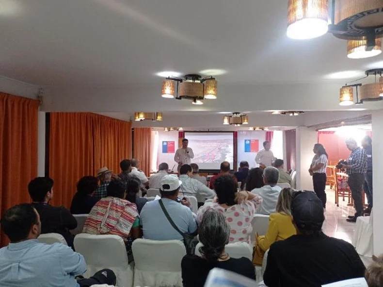
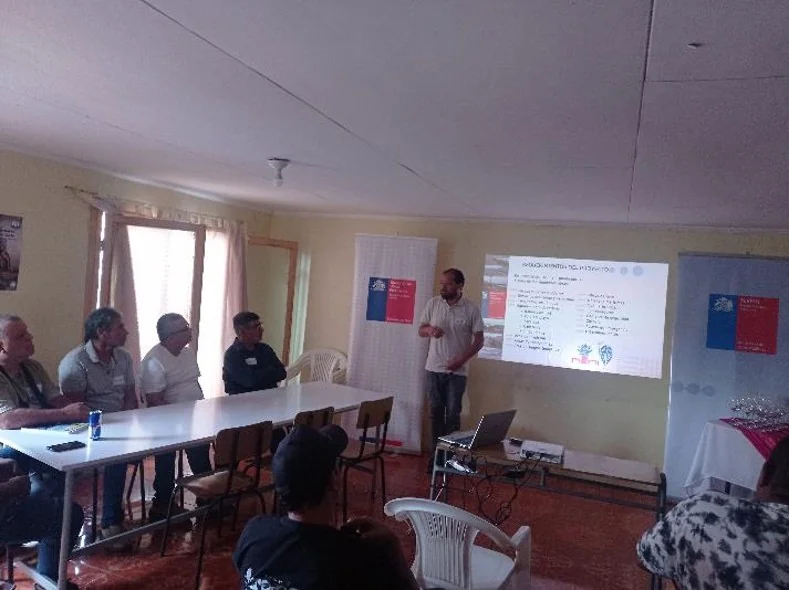
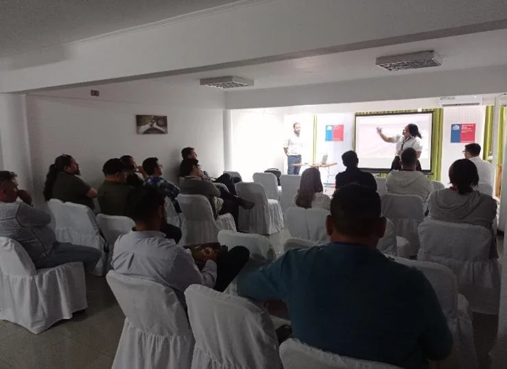
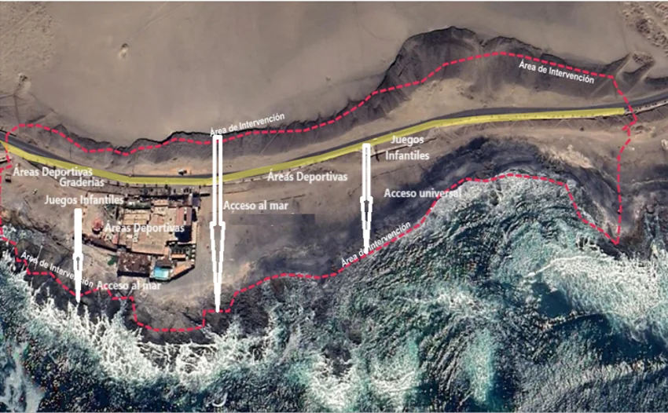
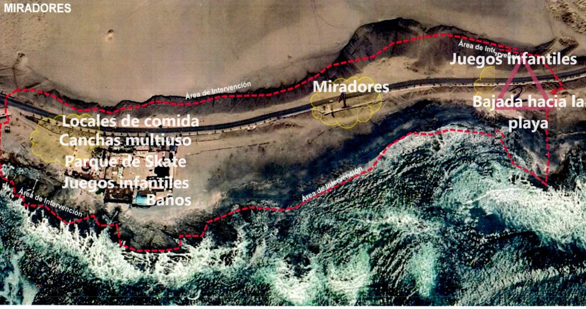
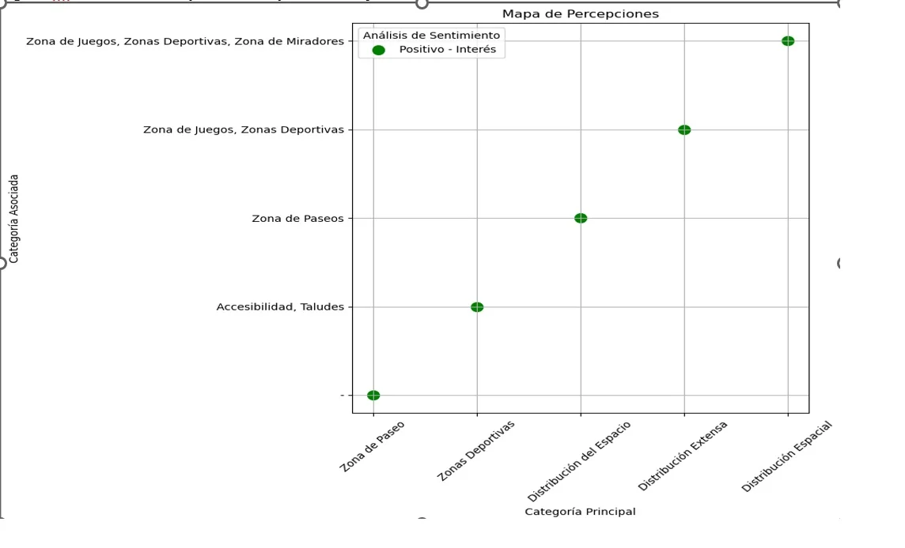

Mejoramiento Borde Costero Playa Arenillas Negras
Encargado de Participación Ciudadana · Inclusión · Enfoque de género
Me desempeñé como Encargado de Participación Ciudadana de GSI Ingeniería durante la primera etapa participativa del estudio Mejoramiento Borde Costero Playa Arenillas Negras, en Arica. El trabajo combinó identificación y coordinación de actores, actividades con comunidad, establecimientos educacionales, usuarios de Teletón, actores vinculados a la pesca y el borde costero y servicios públicos, utilizando metodologías diferenciadas para recoger, territorializar y sistematizar necesidades e inquietudes relevantes para el desarrollo del proyecto.

El proyecto y rol profesional
El estudio abordó el diseño del mejoramiento del borde costero de Playa Arenillas Negras, en el sector sur de Arica. El área se relaciona con Playa Brava, el borde costero urbano, actividades recreativas y deportivas y sectores vinculados a la pesca y al uso cotidiano de la costa.
El proyecto buscaba desarrollar infraestructura y espacios públicos capaces de mejorar la continuidad, accesibilidad y uso del borde costero mediante paseos, áreas recreativas, espacios deportivos, miradores y otras soluciones asociadas al uso del litoral. Su localización exigía considerar simultáneamente dimensiones urbanas, sociales, recreativas, ambientales, patrimoniales y de accesibilidad, dentro de un territorio utilizado por actores y grupos con necesidades diferentes.
Mi rol profesional: Mi participación como Encargado de Participación Ciudadana de GSI Ingeniería se concentró en la planificación, coordinación y ejecución de la primera etapa participativa del estudio y en la sistematización de sus resultados. El trabajo incluyó identificación y contacto con actores relevantes, coordinación con organizaciones e instituciones, preparación de actividades, convocatoria, trabajo territorial, sistematización de resultados y análisis con enfoque de género y equidad.
La estrategia buscó evitar una metodología única para todos los participantes. Las actividades fueron adaptadas según edad, tipo de organización, vínculo con el territorio y condiciones de participación.
Esta primera etapa generó información sobre usos del borde costero, necesidades, inquietudes, prioridades, condiciones de accesibilidad y posibles conflictos asociados al proyecto.
Ver contexto territorial Uso recreativo y deportivo · pesca, buceo y marisqueo · espacio público · accesibilidad · paisaje y patrimonio
Dimensiones territoriales del proyecto
Dimensiones territoriales articuladas en el estudio de mejoramiento del borde costero.
El esquema es conceptual y resume dimensiones territoriales consideradas en el estudio; no reemplaza la cartografía ni los antecedentes técnicos del proyecto.
Como instrumento complementario del proceso, la Dirección de Obras Portuarias desarrolló además una consulta online que recibió 343 respuestas.
Cómo se diseñó la participación Cinco tipos de interlocutores · metodologías adaptadas según público y condiciones de participación
Una participación diseñada para públicos diferentes
La primera etapa contempló ocho encuentros de Participación Ciudadana con enfoque de género. En lugar de concentrar el proceso en una única reunión general, se trabajó con grupos diferenciados para adaptar las técnicas de participación a sus características y formas de relación con el territorio.
Tipología de interlocutores y actores participantes
El proceso se estructuró a través de cinco grandes tipos de interlocutores para responder a sus especificidades territoriales y sociales.
1. COMUNIDAD GENERAL
2. 4 ESTABLECIMIENTOS EDUCACIONALES
3. INSTITUTO TELETÓN ARICA
4. GRUPOS ECONÓMICOS Y ACTORES DEL BORDE COSTERO
5. SERVICIOS PÚBLICOS
Adaptar la metodología al participante
El diseño de las actividades respondió a las características de cada grupo. Con establecimientos educacionales se utilizaron presentaciones audiovisuales, trabajo grupal, cartografía social y priorización de necesidades. En la actividad con Teletón se combinaron reflexión grupal, trabajo individual y cartografía social. Con actores económicos vinculados al borde costero se incorporaron preguntas abiertas, identificación territorial de necesidades y priorización, mientras que con servicios públicos se trabajó mediante presentación técnica y discusión institucional.
La experiencia mostró que una actividad participativa no puede reducirse a aplicar el mismo instrumento a todos los actores. El formato, el lenguaje y la dinámica deben ajustarse a quién participa y a la información que se necesita producir.
Distintos participantes, distintos métodos


Niñez, accesibilidad y enfoque de género
El proceso incorporó de forma explícita públicos que no siempre participan en estudios de infraestructura mediante los mismos mecanismos que organizaciones territoriales tradicionales.
Las actividades con establecimientos educacionales permitieron recoger percepciones y necesidades de niños, niñas y adolescentes. En el Instituto Teletón participaron doce niños, niñas y adolescentes acompañados por sus adultos responsables, utilizando una metodología adaptada para identificar necesidades relacionadas, entre otros ámbitos, con accesibilidad, seguridad e inclusión.
El análisis de las actividades consideró además variables de género, edad, pertenencia a pueblos originarios y movilidad reducida cuando la información disponible permitía realizar esa diferenciación.

Cómo la participación se convirtió en evidencia Cartografía social · necesidades · usos · inquietudes · priorización territorial
De la participación a la evidencia territorial
Las actividades no se limitaron al registro de opiniones. La cartografía social permitió asociar necesidades, usos e inquietudes con lugares concretos del área de estudio.
Los resultados fueron organizados mediante categorías, identificación y priorización de necesidades y representaciones territoriales. El proceso incluyó la elaboración de un mapa de percepciones y contempló la construcción de un ranking de necesidades y un plano síntesis como instrumentos para organizar territorialmente la información levantada.


Del encuentro a la evidencia territorial
Cuando una actividad obliga a adaptar la estrategia
Una de las actividades comunitarias evidenció la necesidad de adaptar la metodología frente a situaciones no previstas. Durante el encuentro surgieron inquietudes relacionadas con otra iniciativa presente en el territorio, lo que modificó la dinámica originalmente planificada.
La experiencia llevó a reforzar un criterio que posteriormente adquirió mayor importancia en mi trabajo: la metodología participativa debe mantener suficiente estructura para producir información comparable, pero también suficiente flexibilidad para responder a controversias, intereses y preocupaciones que aparecen durante el trabajo territorial.
De las necesidades ciudadanas a criterios de diseño
La información sistematizada durante la primera etapa fue concebida como un insumo para el desarrollo posterior de las alternativas del proyecto.
Los antecedentes técnicos de la etapa siguiente muestran que distintos requerimientos provenientes de la Participación Ciudadana fueron contrastados con las alternativas de diseño. Entre ellos se encuentran accesibilidad universal, seguridad, áreas recreativas y deportivas, espacios multifuncionales, acceso al borde costero para actividades de pesca y buceo, sostenibilidad, manejo ambiental e interacción social.
Esto permite reconstruir una cadena de trabajo en la que la participación no termina con el registro de una reunión, sino que genera información organizada que puede ser utilizada por las disciplinas responsables del diseño.
Ver cadena completa de integración técnica Trazabilidad desde públicos y métodos hasta insumos de ingeniería
De la evidencia participativa a los insumos de ingeniería
Comunidad · Estudiantes · Teletón · Pescadores / buzos / mariscadores · Servicios públicos
Talleres · Cartografía social · Trabajo individual · Trabajo grupal · Preguntas y discusión · Priorización
Inquietudes · Necesidades · Percepciones · Usos del territorio · Barreras de accesibilidad · Posibles conflictos
Mapa de percepciones · Priorización de necesidades · Síntesis territorial
Primera etapa participativa · 2023
Mi participación como Encargado de Participación Ciudadana se concentró en la primera etapa participativa del estudio y en la sistematización de sus resultados.
Contexto y condicionantes del proyecto Sensibilidad arqueológica · etapas posteriores · delimitación de mi participación
Un territorio con sensibilidad arqueológica
El área de Arenillas Negras presentaba una condición arqueológica y patrimonial relevante para el desarrollo del proyecto. Los antecedentes técnicos reconocían evidencias arqueológicas y la necesidad de resguardar los valores patrimoniales presentes en el área de intervención.
Esta dimensión imponía condicionantes adicionales al desarrollo de las soluciones y exigía procedimientos específicos para cualquier intervención futura.
Alcance efectivo de mi participación
Mi participación como Encargado de Participación Ciudadana se concentró en la primera etapa participativa del estudio. La planificación contemplaba una segunda ronda de actividades PAC asociada a la presentación y revisión del anteproyecto, pero esas actividades no llegaron a ejecutarse durante mi participación.
Posteriormente, el proyecto quedó a la espera del desarrollo de antecedentes arqueológicos adicionales por parte del MOP y GSI no continuó en las etapas siguientes de la consultoría. Por esta razón, mi experiencia profesional en Arenillas Negras corresponde al proceso participativo ejecutado durante la primera etapa y a la sistematización de sus resultados.
Capacidades y productos desarrollados
Responsabilidades y entregables en la primera etapa del estudio
Una participación que debía adaptarse a quién participaba
Arenillas Negras consolidó una dimensión distinta de mi trabajo en Participación Ciudadana: la necesidad de diseñar metodologías diferentes según los actores involucrados.
Trabajar con comunidad general, estudiantes, usuarios de Teletón, organizaciones vinculadas al borde costero y servicios públicos mostró que la calidad de un proceso participativo depende tanto de a quién se convoca como de la forma en que se construye la instancia de participación.
La experiencia también reforzó la importancia de sistematizar los resultados de manera que puedan ser utilizados posteriormente por los equipos técnicos, manteniendo visible el origen de las necesidades e inquietudes recogidas.
¿Tu proyecto involucra públicos diversos, necesidades territoriales y requerimientos de inclusión?